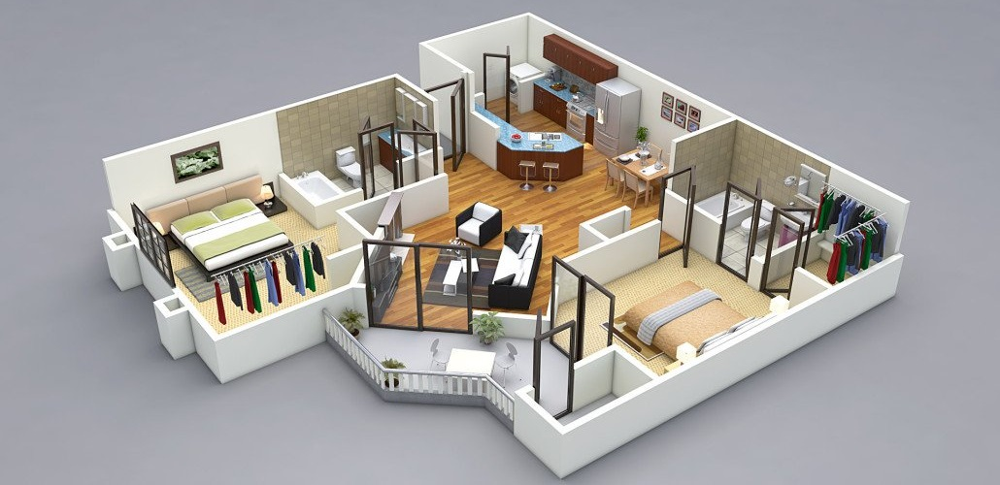

3D візуалізація

Архітектурна 3D візуалізація у наші дні стала невіддільною
частиною проєктів у галузі архітектури та дизайну інтер’єру.
Насамперед можливостями, які надає архітектурна 3D візуалізація, користуються
архітектори та дизайнери інтер’єрів.
3D візуалізація необхідна для:
- презентації проєктів клієнтам;
- реклами своїх послуг;
- поповнення портфоліо;
- підготовки до конкурсів та тендерів;
- наочної ілюстрації очікуваного результату роботи для підрядників.
Крім архітекторів та дизайнерів, послуги архітектурної 3D візуалізації часто потрібні
рієлторам та забудовникам. За допомогою фотореалістичних рендерів вони рекламують та здійснюють передпродажі ще недобудованої нерухомості.
3D візуалізації архітектурних об’єктів, створені з цією метою, можна побачити в інтернеті,
на білбордах, у пресі тощо.
Наш веб-додаток призначений для реклами послуг з 3D візуалізації, розрахунку вартості проекту,
налагодження зв'язку між замовником та виконавцем.